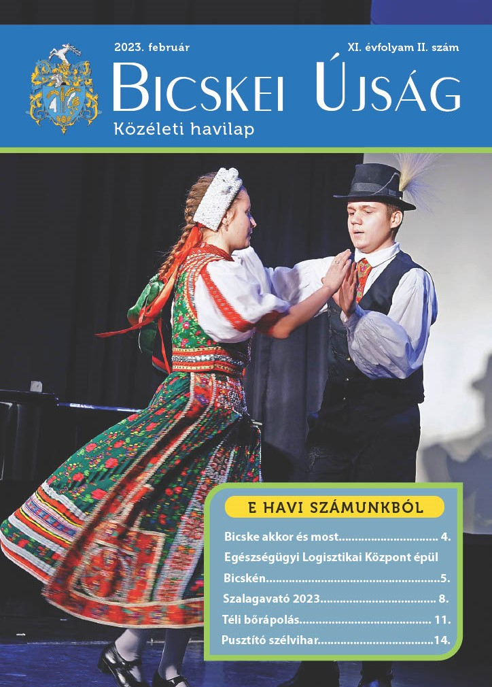

|
|
|
|
| Education | Gallery | About us | Contact |
|
Interview
in Bicske Newspaper February 2023: The Mayer Folk Dance Workshop was on the front page of Bicskei Újság! The magazine features an interview with artistic director Orsolya Mayer, who reveals future plans, as well as the venue of the next foreign performance. |
|  |
|
The full article is available
(in Hungarian) in the online version of the
magazine, and can be read by clicking the button
down below! Full article >> |
|
© Mayer Néptáncműhely, 2022 - 2023 info@mayerneptancmuhely.hu |